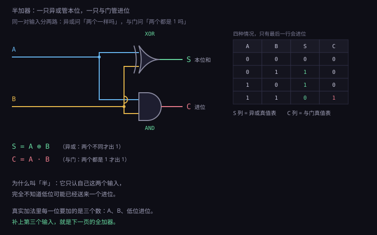
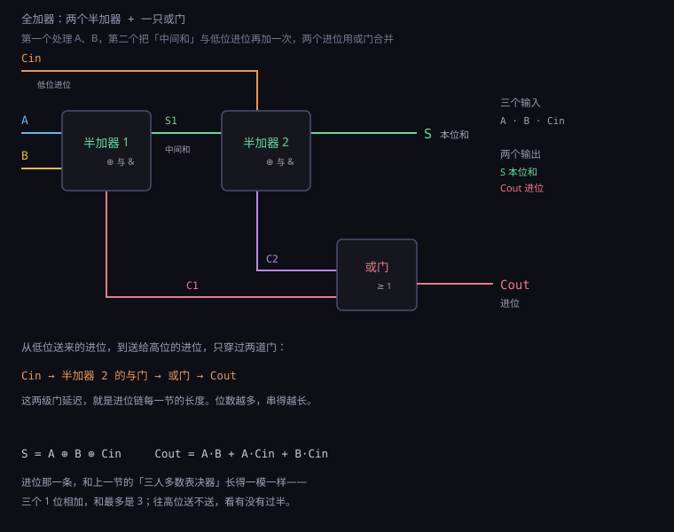
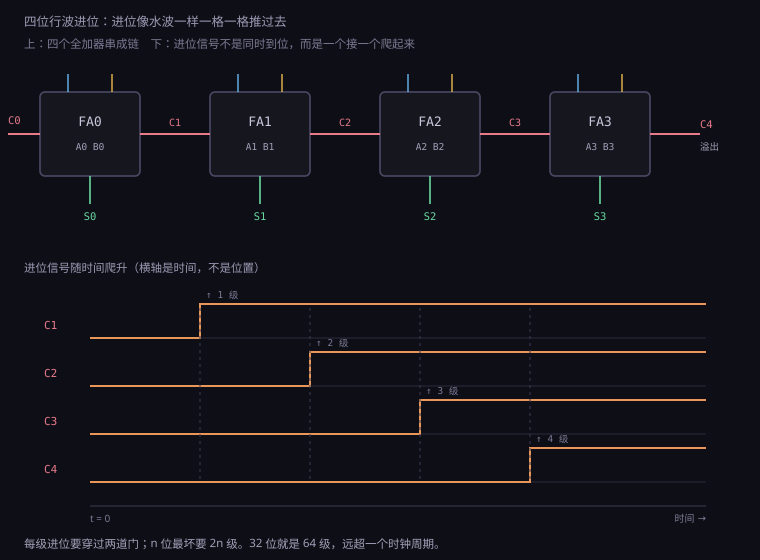
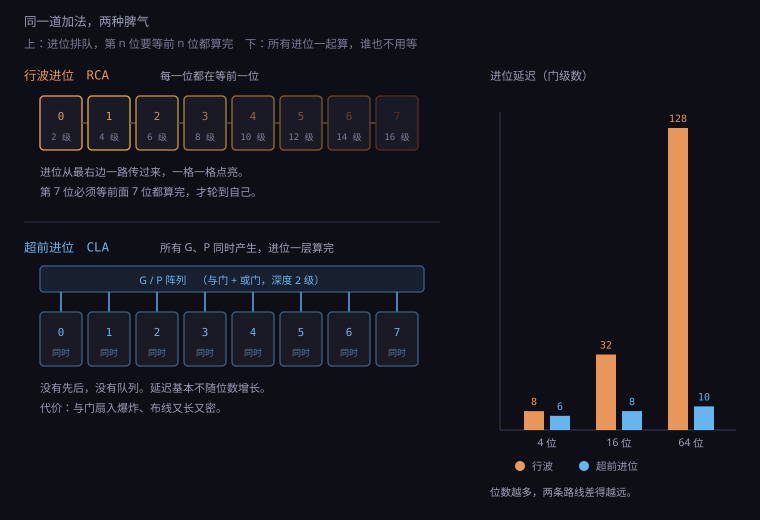
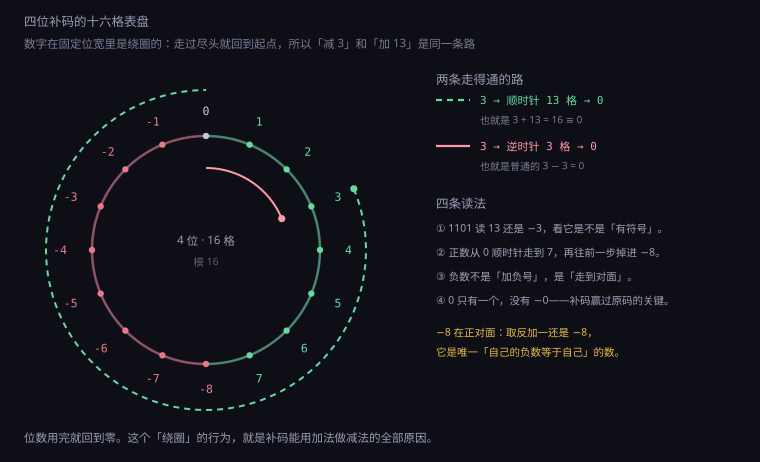

约 1.2 万字 · 6 张图 · 读完你能说清为什么进位是加法器唯一的敌人、 看懂补码减法为什么不用另做一套电路、并且知道 CPU 主频卡在哪一根线上
这是一个流传很广的说法：计算机只会做加法，减法、乘法、除法全是变出来的。 这个说法不算精确，但它抓住了一件真事： 在所有算术运算里，加法是唯一一个「必须由硬件直接实现」的。 其余的都可以用加法绕过去，而且绕得非常划算。
先看减法。小学生都知道 a − b 可以写成 a + (−b)，问题在于「负数」怎么在只有 0 和 1 的世界里表示。
答案是补码——把一个数的所有位取反再加一，就得到它的负数。
于是 a − b 变成 a + (¬b + 1)。
注意这个式子里已经没有减号了，只有加法和取反，而取反是免费的（一根线分叉到非门）。
这意味着：一个加法器，加一排异或门，就同时是加法器和减法器。
不需要两套电路。这是计算机历史上最成功的一次「偷懒」。
再看乘法。竖式乘法你学过：被乘数逐位乘以乘数的每一位，然后错位相加。 二进制里每一位只能是 0 或 1，所以「乘以某一位」这一步退化成了两件事： 该位是 1 就把被乘数抄下来（左移若干位），该位是 0 就写全零。 然后把这些行加起来。于是乘法变成了「一串加法」， 4 位乘 4 位要 4 次加，64 位乘 64 位理论上要 64 次加。 硬件上确实有人这么干过，后来嫌慢，才有了各种优化（第 10 节讲）。
除法同理，是「一串减法」，只不过每次减完要判断够不够减、够减商写 1、不够减商写 0 再把减掉的加回去， 比乘法更啰嗦。浮点运算听起来离加法很远，其实也归约到加法： 两个浮点数相加，先对齐小数点（专业说法叫对阶，把小阶的尾数右移）， 再把两个尾数当整数加起来，最后重新规格化。 乘除浮点稍微复杂些，但核心的加法单元仍然是同一套。
还有一个更隐蔽的地方：几乎每条指令都要经过一次加法。 取指令要 PC + 4，这是一次加法；译码之后要算操作数地址，又是一次； 函数调用要压栈弹栈，栈指针加加减减；就连一次「什么都不做」的空指令， 也要花一个周期把 PC 往前推。有人统计过，一颗标量 CPU 里加法器的数量 是乘法器的十倍以上。它不像乘法器那样引人注目，但它是空气。
所以在动手搭电路之前，先把纸上的竖式看清楚。二进制加法和十进制加法是同一套动作， 只是「逢十进一」换成了「逢二进一」。算 6 + 3：
0 1 1 0 ← 6
+ 0 0 1 1 ← 3
-----------
1 0 0 1 ← 9
个位：0 + 1 = 1，不进位
二位：1 + 1 = 10，本位写 0，往前进 1
四位：1 + 0 + 1（低位进位）= 10，本位写 0，再往前进 1
八位：0 + 0 + 1（低位进位）= 1请注意第三行：「1 + 0 + 1」——这里有三个数在加。 不是两个。因为低位送上来的那个 1，也要参与这一位的运算。 这就是上一节那个半加器不够用的原因，也是全加器必须有三个输入的原因。 纸上的竖式早就把答案摆在那里了：每一位真正要加的是 被加数这一位、加数这一位、以及低位递上来的进位。
从这张竖式到电路，只剩一步翻译：把「一位上的加法」做成一个方框， 方框有两个输出——本位留下什么、往高位递什么。 然后把这些方框按位并排，把右边方框的「递出去」接到左边方框的「递进来」。 剩下的全部工作，就是把这个方框做得又快又小。
所以这一节虽然标题叫「加法器」，讲的其实是整个算术逻辑单元的地基。 而故事的开头，小得让人意外：只需要能算「1 + 1」。
先把问题缩到最小：两个 1 位数相加，结果是什么？
只有四种情况：0+0、0+1、1+0、1+1。
前三种结果都在 0 或 1 之内，用一位就能表示。
但 1+1 得 2，二进制写出来是 10，两位。
这一位多出来的，就是「进位」。
于是任何一位加法都必须有两个输出：一位是这一位的和（记作 S，sum）， 一位是送给高一位的进位（记作 C，carry）。四个输入组合、两个输出， 正好是一张四行的小真值表：
| A | B | S | C | 读法 |
|---|---|---|---|---|
| 0 | 0 | 0 | 0 | 没有，也不进位 |
| 0 | 1 | 1 | 0 | 一个 1，本位记下 |
| 1 | 0 | 1 | 0 | 同上，加法可交换 |
| 1 | 1 | 0 | 1 | 两个 1 凑成 10，本位 0 进 1 |
看 S 那一列：0、1、1、0。这正是异或的真值表——相同为 0，不同为 1。 看 C 那一列：0、0、0、1。这正是与门的真值表——两个都是 1 才输出 1。 上一节末尾埋的那个伏笔，在这里当场兑现：
S = A ⊕ B （本位和：两个输入不同时为 1）
C = A · B （进位：两个输入同时为 1 才产生）一只异或门加一只与门，构成最简陋的加法电路。 它有个专门的名字：半加器（half adder）。 名字里的「半」不是因为功率小，而是因为它只完成了一半工作—— 它没有考虑「低位可能已经给我送来了一个进位」。 而真实的加法，第 3 位算的时候，第 2 位可能正在往它这儿递一个 1。 半加器对此一无所知，它只认自己那两个输入。

用 NAND 也能搭，因为上一节已经证明 NAND 是万用门，四只 NAND 出一个异或， 再加上一只 NAND 做与门（异或后面接反相器再取反一次，或者直接用与非门加非门）。 实际芯片里没人这么省，因为异或门有专门优化的标准单元， 硬拆成 NAND 反而更慢更费面积。这里的取舍原则一直是同一条： 逻辑上用最少的门思考，物理上用最快的单元实现。
半加器虽然「不完整」，但它不是教学道具，真实芯片里到处都是它。 最典型的是多位加法器的最低位：第 0 位下面没有更低的位了， 它的进位输入恒接 0，那还留着第三个输入干什么？ 直接用一个半加器，省下两只管子，还能少一段延迟。 很多标准单元库里，半加器是独立的一个单元，名字就叫 HA， 和全加器 FA 摆在一起，专门给链尾和链头用。
还有一类更常见的用法，是数 1 的个数（popcount）。
异或的性质决定了它天然是「奇偶检测器」：把一堆位全异或起来，
结果是 1 就说明有奇数个 1。半加器把这个性质又推了一步——
它的进位输出等于 A·B，恰好是「这两位里有两个 1」。
于是用一排半加器当计数器，就能把一堆位里 1 的个数统计出来，
最后输出一个二进制数。这个操作在数据压缩、纠错码、
甚至某些机器学习算子里都要用，现代 CPU 有一条专门的指令
POPCNT，一个周期出结果。
把半加器缺的那一半补上：给它加第三个输入 Cin，代表低位送来的进位。 现在有 3 个输入、2 个输出，真值表变成 8 行。 这就是全加器（full adder），整个数字世界最常用的电路，没有之一。
| A | B | Cin | S | Cout | 算术 |
|---|---|---|---|---|---|
| 0 | 0 | 0 | 0 | 0 | 0 + 0 + 0 = 0 |
| 0 | 0 | 1 | 1 | 0 | 0 + 0 + 1 = 1 |
| 0 | 1 | 0 | 1 | 0 | 0 + 1 + 0 = 1 |
| 0 | 1 | 1 | 0 | 1 | 0 + 1 + 1 = 2 |
| 1 | 0 | 0 | 1 | 0 | 1 + 0 + 0 = 1 |
| 1 | 0 | 1 | 0 | 1 | 1 + 0 + 1 = 2 |
| 1 | 1 | 0 | 0 | 1 | 1 + 1 + 0 = 2 |
| 1 | 1 | 1 | 1 | 1 | 1 + 1 + 1 = 3 |
盯着 S 那一列看：0、1、1、0、1、0、0、1。
输入里 1 的个数是奇数时，S 就是 1；偶数时是 0。
所以 S = A ⊕ B ⊕ Cin——异或的可结合性在这里发挥了作用，
三路异或就是「数一数有几个 1，取它的奇偶」。
这个「奇偶」性质在第 9 节会变成一道很有用的工具。
再看 Cout 那一列：0、0、0、1、0、1、1、1。
输出 1 的有四行，都是「至少两个输入是 1」的情况。
上一节那个「三人多数表决器」的表达式还记得吗？
AB + AC + BC。三个输入里两个以上同意就通过。
进位就是多数表决。
这个重逢不是巧合，它揭示了加法的本质：
三个 1 位二进制数相加，和最多是 3，也就是二进制的 11，
所以「这一位留下谁」看奇偶，「往高位送不送」看有没有过半。
S = A ⊕ B ⊕ C_in
C_out = A·B + A·C_in + B·C_in工程上更常见的搭法是两个半加器 + 一只或门： 先用一号半加器算 A 和 B，得到中间和 S1 与中间进位 C1； 再把 S1 和 C_in 喂给二号半加器，得到最终和 S 与进位 C2； 最后 C1 和 C2 有一个为 1 就得进位（两者不可能同时为 1，用或门就行）。 这种搭法对应一个很直白的直觉： 「先把两个数加起来，再把进位数加上去」——两次一位加法，天然就是两个半加器。

请注意图右下角那个数字：从 Cin 到 Cout，信号要穿过 二号半加器的与门，再穿过或门，两级门。 从 A 或 B 到 Cout 反而短一些，一级到与门。 这个不对称，就是下一节全部麻烦的来源。
一位全加器只算一位。要算 4 位、8 位、32 位，最自然的想法是把它们排成一排， 把低位的 Cout 接到高位的 Cin，像接力一样。 最低位的 Cin 接 0（没有更低的位了），最高位的 Cout 就是整个加法的溢出位。 这种结构叫行波进位加法器（ripple carry adder，RCA）。 「ripple」是水波纹的意思，形容进位像涟漪一样一级一级往外扩。
它的优点多到不像话：结构极简、面积最小、布线规整、随便扩多少位都行。 早期 CPU 全都用它——1971 年的 Intel 4004 是 4 位机，四个全加器一串， 延迟完全不是问题，因为那颗芯片的主频只有 740 kHz，一个周期 1350 纳秒， 够进位链跑几百个来回。
问题出在位数变多、频率变高之后。进位链的延迟是可以精确算的：
每一位的 Cin 到 Cout 要过两级门，
n 位加法器最坏情况下（比如 1111...1 + 0000...1，进位要从最低位一路穿到最高位），
进位要走 2n 级门。
行波进位最坏延迟 ≈ 2n × 单级门延迟
n = 4 → 8 级
n = 32 → 64 级
n = 64 → 128 级代入 1.2.1 算过的数字：3 GHz 时钟下，一个周期是 333 皮秒； 现代工艺里一级反相器的延迟大约 10～15 皮秒。 64 级门就是 640～960 皮秒——比一个时钟周期还长两倍。 也就是说，如果 64 位加法器用行波进位，这颗 CPU 的主频根本上不去 3 GHz， 它会被加法器拖到 1 GHz 出头，而且这还是只算加法、别的什么都不干。

这里有个容易搞混的点：进位链慢，慢的不是「算」，而是「等」。 最高位的全加器本身和最低位的一模一样，都是一瞬间就能算完的东西。 它之所以慢，是因为它的第三个输入 Cin 迟迟不来。 电路的速度不取决于最快的部分，取决于最慢的那条串联路径。 这句话是下一节的主题。
但也不要因此把行波进位当成「落后技术」。 它的优点在嵌入式世界里一直活着。8 位单片机（比如经典的 8051 家族、 AVR 的某些型号）主频只有 8～20 MHz，一个周期五六十纳秒， 8 位行波进位最多等 16 级门，连一个周期的零头都不到。 在这种场景里用超前进位，是纯粹的面积浪费—— 而且面积在单片机上是真金白银：多一千只管子，晶圆就少切几十颗芯片。
还有一种场合行波进位是唯一选择：位数极不规则的时候。 比如要做一个 7 位的加法器（某些校验电路、某些传感器接口）， 超前进位的分组是为 4 的倍数设计的，7 位只能在末尾留个残缺组， 结构反而更乱。行波进位不在乎位数，接几个就是几位， 改一位只改一个方框，连布线都不用重画。 简单结构在工程里的价值，往往被「最优解」这个词遮住了。
真正让工程师放弃行波进位的，是「位数 × 频率」这个乘积。 4 位 × 740 kHz 完全没问题；32 位 × 3 GHz 直接崩。 而中间还有一片灰色地带，那里流行一种折中的做法，叫进位跳跃 （carry skip，或者叫 carry bypass），值得花两分钟看看， 因为它是理解超前进位的最佳台阶。
进位跳跃的思路很朴素：把 4 位分成一组， 在组上装一条「旁路」。如果这 4 位的 P 全都是 1 （也就是这组里每一位都肯把进位往下传）， 那么进来的进位不必真的穿过 4 个全加器，直接沿着旁路跳到下一组去。 判断条件只是一只 4 输入与门，比穿四级快得多。
若 P3·P2·P1·P0 = 1：
进位走旁路（1 级门），而不是穿过 4 个全加器（8 级门）
否则：老实穿过这一组最坏情况下（每组都不满足旁路条件）它还是线性的，但平均情况快很多， 而面积只多了一只与门和一只选择器。 这是典型的「用一点点冗余，买下大部分收益」的工程决策， 在 80 年代的处理器里非常流行。 它和第 6 节的超前进位只差一步：超前进位是把「判断条件」也提前算好， 连旁路都不走了——直接算出答案。
数字电路里有一个概念，比任何具体的门都重要：关键路径 （critical path）。它指的是从一个寄存器的输出出发、穿过一堆组合逻辑、 到达下一个寄存器输入的那条最长路径。 时钟周期必须比这条路径的延迟更长，否则数据还没稳定就被下一个时钟沿抓走了， 抓到的是半路上那个还没定型的值——行话叫建立时间违例（setup violation）。
这里说的「建立时间」（setup time）本身也是个物理量： 触发器不是时钟沿一到就能瞬间抓稳的，数据必须在时钟沿之前 稳定一段时间，这段时间叫建立时间；还要在时钟沿之后再保持一段时间， 叫保持时间（hold time）。两者加起来通常几十皮秒， 在 3 GHz 的芯片上已经占了一个周期的十分之一。 所以真正留给组合逻辑的时间，比一个周期还要少一截。
可用时间 = 时钟周期 − 建立时间 − 时钟偏斜(skew) − 布线余量
3 GHz 为例：333 ps − 30 ps − 20 ps − 余量 ≈ 280 ps 给逻辑时钟偏斜是个绕不开的麻烦。时钟信号要送到芯片上亿个触发器， 走的线长短不一，到达时刻就有早有晚，差个十几皮秒很常见。 设计时要按最坏的那个来算——也就是「最晚到的时钟」和「最早到的时钟」 一起挤压中间的窗口。这就是为什么芯片设计里，时钟树（clock tree） 本身就是一个专门的研究方向，要花大量面积去把它做成对称的。
所以「CPU 主频 3 GHz」这句话翻译过来是： 这颗芯片上最慢的那条组合路径，延迟不超过 333 皮秒。 注意是「最慢的那条」，不是平均。芯片设计师的工作有很大一部分， 就是在找那条最慢的路径，然后想办法把它削短——插入寄存器把它切断、 换成更快的单元、调整布局让线短一点。
加法器为什么经常成为关键路径上的常客？因为它的位置太靠前了。 取指令时要算 PC + 4，这条路上就有一个加法器； 访存时要算地址，又是一个；分支预测失败要重定向，还要算。 更要紧的是，加法器是「环」的一部分： 循环变量每轮加一，下一轮的地址依赖这一轮的结果， 这种依赖关系没法靠流水线切开，只能硬啃延迟。
好，问题摆清楚了：行波进位是线性的，位数一多就废。 那能不能让进位不排队？ 能。而且思路极其漂亮——不是让进位跑得更快，而是让它根本不用跑。
先做一个思想实验。第 5 位的全加器在等第 4 位给它送进位。 它能不能自己判断出「第 4 位会不会给我送一个 1」？ 如果它自己就能判断，那就不用等了——直接算。
答案是能。因为「某一位会不会产生进位」这件事，只取决于那一位的两个输入 和它收到的进位，而这些信息在加法刚开始的时候全都已经摆在桌上了。 我们缺的从来不是信息，是把信息从低位搬到高位的时间。 既然搬运费时间，那就别搬——让每一位自己去把前面所有位的情况看一遍。
具体的做法，是给每一位定义两个信号：
| 信号 | 定义 | 含义 | 什么时候为 1 |
|---|---|---|---|
| 生成 G | A · B | 这一位自己就会产生进位 | 两个输入都是 1 |
| 传播 P | A ⊕ B | 这一位会把别人的进位原样传下去 | 两个输入恰好一个为 1 |
这两个词选得很准。G 是 generate，我自己造得出一个进位，不用求人； P 是 propagate，我造不出来，但如果有人给我一个，我能原封不动递上去。 于是第 i 位往上的进位可以写成一句话： 要么我自己生成，要么我收到一个并且我肯传。
C(i+1) = G(i) + P(i) · C(i)这个递推式看着还是要一层层代进去，但奇妙的地方在于：它可以完全展开。 展开之后，每一项都只由各位的 G、P 和最底下的 C(0) 组成， 而 G、P 只依赖 A、B，全都是加法一开始就同时到位的信号。 展开前四项看看：
C1 = G0 + P0·C0
C2 = G1 + P1·G0 + P1·P0·C0
C3 = G2 + P2·G1 + P2·P1·G0 + P2·P1·P0·C0
C4 = G3 + P3·G2 + P3·P2·G1 + P3·P2·P1·G0 + P3·P2·P1·P0·C0读一遍 C4 的意思：第 4 位要进位，可能是第 3 位自己生成的； 也可能是第 2 位生成的、第 3 位传上来的；也可能一路从第 0 位传上来。 五种可能，全都并列在一行式子里。 它们之间没有先后依赖，可以同时算。
这就是超前进位（carry look-ahead，CLA）的全部思想： 把「串行的等待」换成「并行的展开」。 所有的进位都变成一层「与门阵列 + 或门」，深度只有两三级， 无论多少位，进位的延迟几乎是常数。
光看公式不踏实，代一组数进去验一遍。用 4 位算 0101 + 0011（5 + 3）：
A = 0101 B = 0011 C0 = 0
G0 = A0·B0 = 1·1 = 1 P0 = A0⊕B0 = 0
G1 = A1·B1 = 0·1 = 0 P1 = A1⊕B1 = 1
G2 = A2·B2 = 1·0 = 0 P2 = A2⊕B2 = 1
G3 = A3·B3 = 0·0 = 0 P3 = A3⊕B3 = 0
C1 = G0 + P0·C0 = 1 + 0 = 1
C2 = G1 + P1·G0 + P1·P0·C0 = 0 + 0 + 0 = 0
C3 = G2 + P2·G1 + P2·P1·G0 + … = 0 + 0 + 1 = 1
C4 = G3 + P3·G2 + … = 0
结果 = 1000 = 8 ✓注意 C3 那一行：它等于 1，但它的来路不是第 2 位生成的， 而是第 0 位生成（G0 = 1）之后被第 1、2 两位一路传上来的（P1 = P2 = 1）。 这正是「传播」这两个字的意义：第 1、2 位自己不产生进位， 但它们让别人的进位通过了。 整条链上只有第 0 位是真正的源头，其余都是传声筒。
展开式里那些「P2·P1·G0」的乘积项，本质上是在问一个问题： 「从第 0 位到第 2 位这一路，是否全程都肯传？」 是一个长与门就能回答的问题，不需要等。这就是并行的全部来源。

但天下没有白吃的午饭。看 C4 那一行有多长——5 个乘积项， 最长的那一项里有 4 个变量相与。这意味着什么？ 在 CMOS 里，一个与门的输入数每加一个，就要多串一只晶体管， 而串联的晶体管越多，导通电阻越大、速度越慢（上一节说的「串联不过三」）。 8 位的进位项有 9 个乘积项、最长项 8 个变量， 16 位就更夸张了。展开确实消除了等待，却换来了扇入爆炸。
所以纯超前进位一般只做到 4 位。超过 4 位怎么办？ 这就引出了工程上最常见的一招：分层。
思路很简单：既然一次展开 64 位会把门撑爆，那就分两步。 把 64 位切成 16 个 4 位小组，每组内部用超前进位（4 位展开刚好能接受）； 然后把这 16 个组当成 16 个「超大的位」，再在上面做一层超前进位。 组内 4 位、组间 16 组，两层就搭完了。
为了做第二层，每个 4 位组要往外报两个信号，含义和单位完全一样，只是粒度变大了： 组生成（这个组整体会不会产生一个进位）和 组传播（这个组会不会把进来的进位原样传出去）。 拿 4 位组举例，组生成是「四位里任何一位自己生成、且它上面的位全都肯传」， 组传播是「四位全都肯传」。公式写出来比单位长，但结构是同构的：
组传播 P* = P3·P2·P1·P0 （四位都肯传，才叫整组肯传）
组生成 G* = G3 + P3·G2 + P3·P2·G1 + P3·P2·P1·G0看出来了吗？这和刚才 C4 的展开式长得几乎一样，只是把 C0 拿掉了。 层次化的美妙之处就在这里：每一层的电路长得一模一样，只是看的尺度不同。 这种「同构递归」在计算机里反复出现——文件系统、网络协议栈、缓存层次， 都是同一个套路。加法器只是最早用上它的地方之一。
实际的高性能加法器会做得更细。有一类结构叫前缀加法器 （prefix adder），把「组生成/组传播」的合并运算抽象成一个二元算子， 然后用树形结构把它并行合并。Kogge-Stone 是最快的一种， 64 位只需要 6 层（log₂64），代价是布线密集、面积大； Brent-Kung 省面积但层数多；现实中的选择往往在两者之间。 它们的共同点：延迟随位数按对数增长，而不是线性。
| 结构 | 64 位延迟 | 面积 | 用在哪 |
|---|---|---|---|
| 行波进位 | 约 128 级 | 最小 | 低功耗、低频、面积敏感 |
| 4 位分组 CLA | 约 20 级 | 中 | 通用 CPU 的常规选择 |
| 两级层次 CLA | 约 10 级 | 较大 | 高性能核心 |
| Kogge-Stone | 约 6 级 | 最大 | 高频、GPU、专用加速器 |
这张表里藏着一个反复出现的规律：速度和面积永远是交换关系。 想要快，就得多铺线、多放门、多耗电；想要省，就得多等。 没有第三种选择。这条规律从晶体管那一节一直贯穿到整本书结束， 只是每一层的「面积」换了个名字——管子数、门数、芯片面积、功耗预算。
到这里，加法本身算是讲完了：能算一位、能算多位、还能算得挺快。
但计算机要的不止加法。第一节承诺过「减法不用另做电路」，
现在该兑现了——而且兑现的方式，会顺带解释一个所有人都踩过的坑：
为什么 127 + 1 在某些语言里会变成 −128。
要理解补码，先要接受一个有点荒谬的前提：在固定位数的世界里，数字是绕圈的。
4 位二进制能表示 0000 到 1111，一共 16 个数。
如果你在 1111 上加 1，会得到 10000——但只有 4 位，最高那位装不下，
直接丢掉，剩下 0000。也就是说，15 + 1 = 0。
这不是 bug，是模运算。就像钟表：11 点再加 2 小时是 1 点， 你说「13 点」也行，但表盘上只看得到 1。 4 位寄存器的表盘上有 16 个刻度，转满一圈回到原点。 这个「溢出归零」的行为，正是补码能用加法做减法的全部秘密。
在这个 16 刻度的表盘上，怎么表示 −3？
要让「加 3」和「加某个数」得到同一个结果（也就是 0），
那个数必须满足 3 + x = 16，所以 x = 13。
所以 −3 就写成 13（二进制 1101）。
验证一下：0011 + 1101 = 10000，丢掉最高位，就是 0000。
对上了。
那怎么从 3 快速算出 13？观察一下 0011 和 1101：每一位都相反。
¬3 = 1100 = 12，再加 1 就是 13。
所以求负数的方法就是「全部取反，再加一」。
这不是巧合——在 n 位的表盘上，一个数和它取反后的和恒等于全 1（即 2ⁿ − 1），
再补 1 正好凑成 2ⁿ，也就是归零的那一圈。
对 n 位数 a： a + ¬a = 2ⁿ − 1
a + ¬a + 1 = 2ⁿ ≡ 0 (mod 2ⁿ)
所以 −a ≡ ¬a + 1
这张表盘图值得盯着看一会儿，因为它一次性解释了三个常见困惑。 第一，为什么负数区从 −8 开始而不是 −7？ 因为 8 到 15 有八个刻度，正好分给 −8 到 −1。 第二，为什么 4 位有符号数范围是 −8 到 +7，不对称？ 因为 0 占了一个刻度，正负没法均分，只能让负数多拿一个。 第三，为什么 −8 取反加一还是 −8？ −8 是 1000，取反得 0111，加一回到 1000。它在表盘的正对面， 自己的负数就是自己。这是唯一一个这样的数，工程上偶尔会踩到。
现在把减法接进电路。要算 A − B，也就是 A + ¬B + 1。
取反用一排异或门就能办到（一个输入接 1 的异或门就是非门，
接 0 就是直通——第 9 节讲过），加一正好可以把最低位的 Cin 接成 1，
免费得到，不用额外的加法器。
补码还有一个必须交代的副作用：位宽变化时怎么处理高位。
8 位的 −3 是 1111 1101，要放进 32 位寄存器，高 24 位填什么？
填 0？那就变成了 253，差得离谱。正确答案是全部填符号位，
也就是一路补 1，得到 1111 ... 1111 1101。
这个动作叫符号扩展（sign extension）。
为什么补符号位就对？回到表盘那张图：8 位是 256 个刻度的盘， 32 位是 40 多亿个刻度的盘。−3 在小盘上是「从 0 倒退 3 格」， 在大盘上也是「从 0 倒退 3 格」。大盘上倒退 3 格的位置， 按二进制写出来就是最高位全 1 加一个 1101——和大盘正中间那个 「半圈」的位置对齐，所以高位自然全 1。 符号扩展只是在做「同一个负数换个盘子表示」这件理所当然的事。
8 位： 1111 1101 = −3
32 位： 1111 1111 1111 1111 1111 1111 1111 1101 = −3 ← 符号扩展
错误做法：0000 0000 0000 0000 0000 0000 1111 1101 = 253 ← 零扩展
零扩展不是错的——无符号数扩位就该填 0。
问题在于编译器必须知道这个数是有符号还是无符号，
填错一次，值是 253 还是 −3，程序走向完全不同。
C 语言里那个著名的坑就在这儿：把一个 int 隐式转成
unsigned int，编译器老老实实按无符号规则处理，
于是 if (x < 0) 永远为假。这算不上语言设计的失误，
但它确实让无数人在深夜盯着屏幕怀疑人生。
SUB = 0：B 直通，C_in = 0 → A + B （加法）
SUB = 1：B 取反，C_in = 1 → A + ¬B + 1 （减法）
一根控制线 SUB 扇出到所有异或门的一个输入端，
再接到最低位的进位输入。整个 ALU 的加减法单元，就是「一个加法器 + n 只异或门」。
这一招在 1945 年冯·诺依曼那份《EDVAC 报告草案》里就写清楚了，
到现在所有 CPU 都还在用，一个字没改。
加法器算完之后，除了输出结果，还会顺手输出几个「状态位」。 它们不是结果的一部分，但后面的指令（条件跳转、比较、大数运算）要靠它们做判断。 这就是 CPU 里那组著名的标志位。最基本的有四个：
| 标志 | 全名 | 什么时候置 1 | 谁在看它 |
|---|---|---|---|
| ZF | 零标志 | 结果所有位都是 0 | 判断相等、循环结束 |
| SF | 符号标志 | 结果的最高位是 1 | 判断正负 |
| CF | 进位标志 | 最高位往外进位了 | 无符号数比较、多字加法 |
| OF | 溢出标志 | 有符号结果超出了表示范围 | 有符号数比较、异常检测 |
ZF 和 SF 都很好懂，直接看结果就行。真正的坑在 CF 和 OF—— 几乎所有初学者都会把这两个搞混，而它们确实不是一回事。
CF 关心的是「最高位有没有往外冒出一个 1」。它是给无符号数用的。
8 位无符号数最大是 255，200 + 100 = 300，超出了 8 位能装的范围，
最高位会进位，CF 置 1。这时候结果寄存器里剩下的是 44（300 − 256），
而 CF 在告诉你：真实结果比这个大 256。
多字加法就靠它串起来——先加低 32 位，把 CF 存下来，
再用「带进位加法」加高 32 位，CF 就充当了字与字之间的进位。
OF 关心的是另一件事：有符号数算出来的结果，符号对不对。
8 位有符号数范围是 −128 到 +127。如果 127 + 1，
二进制是 0111 1111 + 0000 0001 = 1000 0000，
最高位是 1，按有符号读就是 −128。两个正数相加得到了一个负数，
这在数学上不可能，所以 OF 置 1，告诉你「别信这个结果」。
要在电路上抓 OF，有个极其简洁的判据： 看最高位的进位进和出是否一致。
OF = C_in(最高位) ⊕ C_out(最高位)为什么？因为最高位是两个符号位相加。 如果它俩各自往里送的进位，和它送出去的那个进位不一样， 说明符号位被「顶翻」了——符号位的值发生了不该发生的改变。 四种情况穷举一下就清楚了：
| A 的符号 | B 的符号 | 进位进 | 进位出 | OF | 说明 |
|---|---|---|---|---|---|
| 正 | 正 | 0 | 0 | 0 | 正常，结果仍为正 |
| 正 | 正 | 1 | 0 | 1 | 正 + 正 变负，溢出 |
| 负 | 负 | 0 | 1 | 1 | 负 + 负 变正，溢出 |
| 负 | 负 | 1 | 1 | 0 | 正常，结果仍为负 |
这张表解释了一个让人困惑的现象：同一次加法，CF 和 OF 可能只有一个置位。
127 + 1（8 位）：结果是 128，最高位没有往外进位，所以 CF = 0；
但符号翻了，OF = 1。255 + 1：结果 0，最高位往外进位了，CF = 1；
按有符号读是 −1 + 1 = 0，没有溢出，OF = 0。
同一个电路，同一批数据，两个标志说的是两件不同的事。
这个区别在编程里的后果非常实际。比较两个数大小时，
无符号要用 CF，有符号要用 SF 与 OF 的组合——
这就是为什么汇编里同一句「小于就跳转」有两个版本，
一个叫 JB（below，无符号），一个叫 JL（less，有符号）。
用错了会得到一个荒谬的结论，比如「−1 比 1 大」
（因为无符号读法下 1111 是 15）。
C 语言里那个经典 bug 就这么诞生的：把 int 赋给 unsigned 再比较。
这里值得把「比较」这件事单独说透，因为它的实现方式很反直觉：
CPU 里没有「比较器」这个部件。
一条比较指令（x86 的 CMP、ARM 的 CMP）
在硬件上就是一次减法，只不过结果不写回寄存器，
只留下标志位。减出来是 0，ZF 就置位，说明两个数相等；
减出来是负数，SF 置位，说明第一个小。
但有符号的比较不能只看 SF。举个 4 位的例子：比较 −8 和 1。
1000 − 0001 在补码里是 1000 + 1111，
结果是 0111 = 7，听起来 −8 比 1 大 7。
为什么错了？因为真实结果是 −9，超出了 4 位有符号数的范围（−8 到 7），
溢出了。溢出会让符号位翻转，于是 SF 说的和真话正好相反。
无符号「A < B」： CF = 1 （减法产生了借位）
有符号「A < B」： SF ≠ OF （符号被溢出翻转时要反过来读）
最后那个 SF ≠ OF 是体系结构课上最经典的一个式子，
它的意思可以翻译成一句话：「符号位说的，只有在不溢出时才可信；
一旦溢出了，就得把它反过来听。」
JL 指令做的就是这件事——把 SF 和 OF 异或一下再判断。
一个异或门，承担了「有符号比较」的全部智慧。
回到第一节的承诺：乘法是一串加法。现在手里的工具够了，把这件事做实。
二进制竖式乘法有个巨大的便宜：乘数的每一位只能是 0 或 1。 所以「乘以第 i 位」这一步，只有两个可能： 乘数该位是 1，就把被乘数原样抄下来并左移 i 位；是 0，就写全零。 而「左移 i 位」在硬件里是免费的一根线——把线接到第 i 位之后的位置上就行， 不需要任何门。于是乘法的每一行，实际上就是 被乘数 与 乘数的一位（一位与门），再错位摆好。
4 位乘 4 位需要 16 只与门产生 4 个部分积，再把它们加起来。 加的时候有个技巧：不要排成一条 4 级串联的加法链， 而是一层一层两两相加，做成树形（叫华莱士树或达达树）。 4 个部分积用两级加法就能压成 1 个，延迟从 4 级降到 2 级。 这又是那个熟悉的套路：把串联换成并行。 加法器那边用超前进位做的事，乘法器这边用树形归约来做。
但真实的乘法器还有一个更狠的优化，叫 Booth 编码。
它盯着乘数看，发现一件事：如果乘数里有一长串连续的 1，
比如 0011 1100，那按位拆开就要做四次加法；
但如果把它看成 0100 0000 − 0000 0100（也就是 64 − 4），
就只需要一次加法和一次减法。
连续 1 的串 → 一次减法 + 一次加法
0111 1110 = 1000 0000 − 0000 0010
（126） （128） （2）Booth 编码把「乘数每一位看一次」变成「每两位看一次」， 部分积的数量直接砍半。这是 1951 年 Andrew Booth 发明的， 到今天所有高性能乘法器都还在用它的变体（基-4 Booth、基-8 Booth）。 它省的不只是加法次数，还有与之相关的面积和功耗—— 这也是为什么现代 CPU 的乘法器只比加法器慢一点点，而不是慢几十倍。
除法就没这么好命了。它的本质是「试商」： 拿被除数的高位减除数，够减商写 1，不够减商写 0 并把减掉的部分加回去 （或者聪明一点，先比较再决定减不减）。 每次试商都要一次减法加一次判断，而且下一步依赖上一步的结果， 没法像乘法那样并行展开。除法天生是串行的。
| 运算 | 本质 | 能不能并行 | 相对延迟 |
|---|---|---|---|
| 加法 | 一根进位链 | 能（超前进位） | 1 |
| 减法 | 加法 + 取反 | 同加法 | 1 |
| 乘法 | 部分积 + 树形归约 | 能（树 + Booth） | 3～5 |
| 除法 | 逐位试商 | 很难 | 10～30 |
这张表解释了一个编程时能摸到的现象：除法真的慢。
在 x86 上，一次 64 位整数除法要二三十个周期，而加法只要一个。
所以编译器有个经典优化：除以常数会变成乘法和移位。
x / 4 编译成 x >> 2，
x / 3 编译成一串魔数乘法——编译器在帮你绕开那条串行的试商路径。
这不是雕虫小技，这是编译器作者对你 CPU 里那个除法器的同情。
x % 1024 会退化成 x & 1023，
把一个除法变成一个与门。
乘法还有一个今天极其重要的变体，值得单独提：乘加融合
（FMA，fused multiply-add）。它的功能是算 a × b + c，
但关键在于——中间的乘积不截断、不舍入，直接送进加法器。
于是只有一次舍入，精度比「先乘再存、再取出来加」高，
速度也快（省了一次写回和一次读取）。
为什么这件小事这么要紧？因为神经网络里的核心运算就是它。
一个全连接层、一个卷积核，算的都是「一堆乘积累加」：
y = Σ wᵢxᵢ。
一块 AI 加速器上可能有几千个乘加单元并排工作，
每个单元干的活就是反复做 FMA。
你听到的「算力多少 TOPS」，数的是这些乘加单元每秒能做多少次。
而它们内部，乘法器后面接的就是本节讲的那种加法树。
所以「加法器」这个听起来最基础、最没有技术含量的部件， 在今天依然是最热门的电路之一。它不在聚光灯下， 但每一次 AI 推理、每一次图形渲染、每一次加密解密的背后， 都有成千上万个加法器在同时把一堆 1 和 0 摞成一个数。
逻辑上讲，全加器是「两个半加器 + 一个或门」。听起来很省。 但落到 CMOS 上，账要重算一遍，结果会让人有点心疼。
一只异或门在 CMOS 里可不是「一只门」。它没法像与门、或门那样用几只管子简单拼出来， 标准做法要 8～12 只晶体管（取决于用传输门还是纯静态 CMOS）。 而全加器里有两个异或（第二个半加器的异或，加上第一个的）， 再加与门和或门，一个静态 CMOS 全加器大约 28 只晶体管。
静态 CMOS 全加器 ≈ 28 只晶体管
32 位行波加法器 ≈ 900 只
64 位超前进位加法器 ≈ 3000～6000 只（含进位树）这个数字要放到上下文里才有感觉：一颗现代 CPU 有几百亿只晶体管， 所以一个加法器在面积上微不足道。它贵的地方不在面积，在延迟和布线。 尤其是超前进位那棵树，它的连线又长又密， 在先进工艺下，线延迟已经超过了门延迟—— 信号在金属线里跑的时间，比在晶体管里翻转的时间还长。
所以工程上有一些听起来很奇怪的做法。比如镜像加法器 （mirror adder），把电路画成上下镜像对称的形状， 让 PMOS 网络和 NMOS 网络共享某些内部节点，管数降到 24 只左右， 更重要的是布线变得规整、寄生电容变小。 还有用传输门逻辑或多米诺逻辑实现的加法器， 牺牲静态功耗和噪声容限，换取更短的延迟。
这些细节不必记住，但有一个道理值得带走： 逻辑上的「一只门」，在物理上是一群管子加一堆线。 你在纸上画一个方框写「FA」，芯片上它是 28 只管子、七八层金属、 几十个过孔。而延迟、功耗、面积这三笔账，全都要从这些管子和线里算出来。 从这一节往后，凡是看到「门」这个字，心里都要自动翻译成「一群管子」。
面积讲完，还剩一笔更贵的账：功耗。
在 CMOS 里，每一次 0 变成 1，都要给下一级的栅极电容充一次电，
消耗的能量大约是 CV²。这个能量在 1 变成 0 的时候
是白扔掉的（放电到地，不回收）。
换句话说，电路每翻转一次，就要付一次电费。
单位翻转功耗 ≈ C · V² · f
C 是负载电容（线越长越大），V 是电源电压，f 是翻转频率一颗运行时 3 GHz 的 CPU，内部几百亿只晶体管里， 每个周期都有一大批在翻转。加法器虽然个人功耗不大， 但它数量多、且在关键路径上（关键路径意味着电压不能降太多， 否则会更慢）。这两条叠加起来，加法器在你的电费单上占的份额并不小。
所以现代芯片里有一个和延迟同样重要的优化目标：减少翻转。
编码上让数据总线少变几位（格雷码就是干这个的）、
运算时把不用的单元断电（时钟门控）、
电压频率按需调节——都是为了把 f 和 V 压下去。
1.2.1 讲的登纳德缩放失效之后，这条路成了唯一的出路。
这也解释了为什么最近十年 CPU 主频停在 4～5 GHz 不动了：
再往上加，不是做不到，是散热器扛不住。
这一节从一只异或门走到 64 位加法器，路子是这样的： 半加器只会算两个数，不知道低位有没有进位； 全加器补上第三个输入，进位变成「多数表决」； 把它们串起来就是行波进位，简单但慢，延迟随位数线性增长； 超前进位把「等待」换成「展开」，用生成/传播两个信号让所有进位同时算出来； 位数一多展开就撑爆，于是分组分层，最后收敛到对数延迟的前缀树。
然后是减法和标志位。补码把减法变成了加法，一个控制信号就让加法器兼职减法器； CF 和 OF 各管一摊，前者看无符号的溢出，后者看有符号的符号位翻转， 判据是「最高位的进位进与进位出是否一致」。 最后乘法是移位的部分积加树形归约，除法是绕不开的串行试商。
不过请注意，这一节讲的所有电路都还是「组合逻辑」—— 输入变了，输出跟着变，没有任何记忆。 这意味着它算完一次就得一直保持输入不变，否则结果会跟着乱。 而真实的 CPU 需要一个节拍器，让成千上万个加法器在同一瞬间一起出结果， 再一起把结果锁住。那个节拍器叫时钟，那个锁住结果的元件叫触发器。 下一节讲它们，也讲它们带来的新麻烦：当信号在时钟边沿那一刻刚好在变， 到底算 0 还是算 1？